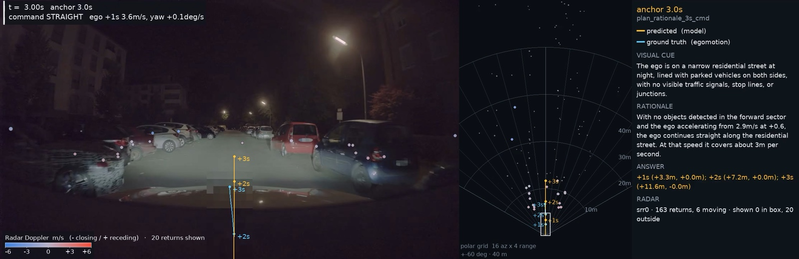

MULTIMODAL AI · PHYSICAL INTELLIGENCE
보이지 않는 정보까지,
이해하는 AI.
레이더의 물리적 관측과 언어 모델의 추론을 연결합니다.
인지에서 판단, 그리고 행동으로 이어지는 멀티모달 AI를 연구합니다.
Postdoctoral Researcher · KAIST InnoCore LLM
Working at DGIST

Radar × Vision × Language
PROFILE
학력, 연구 업적, 그리고 연구 과제
- 학력 및 현황: 경북대학교 석사(2018), 박사(2025). KAIST InnoCore LLM 박사후연구원 · Working at DGIST(2025–2026).
- 주요 연구 분야: Radar-AI, Physical-AI, Autonomous Driving, Video-LM. NLP와 CV를 포함한 다양한 AI 분야에서 연구 활동을 수행했습니다.
- 학술역량: AI 관련 SCI 학술지 및 최우수 학술대회 논문 10편(주저자 7편), AI 연구 과제 8건.
- Radar-AI와 LLM을 연동하는 연구를 CVPR 및 NeurIPS에서 발표했습니다. 제공 자료에는 해당 연구를 “국내 유일”로 소개하고 있습니다.
- CVPR, WACV, ACL, NeurIPS, ICLR 등 다양한 AI 분야의 논문 및 Reviewer 활동, Text-Diffusion Model과 Reinforcement Learning 관련 Invited Talk을 진행했습니다.
- LLM InnoCore 사업단: Radar + LLM 및 VLA 학습 데이터 생성과 학습 파이프라인 구축.
- 디지털 콜럼버스 프로젝트: 공장 안전 관련 멀티센서 융합 모델 개발.
- LG Electronics 에어컨 공장 자동 검증: Test Code Generation Tool Agent 개발.
- 스마트 보고서 요약: LLM이 요약한 보고서의 hallucination 검증 및 수정.
- 비디오 튜링 테스트: Video QA 연구 및 개발. WiseKB: Document Summarization 모델 연구 및 개발.
RESEARCH AREAS
네 가지 연구 분야
- Radar-AI: LLM의 human pose mmWave 데이터 이해 능력 평가와 벤치마크 구축. Radar 신호의 textualization을 통한 instruction tuning, mmWave 포인트 클라우드를 직접 입력하는 encoder 설계 및 학습 방법을 연구합니다.
- Radar 표현 예시: point cloud → textualization → LLM, 또는 point cloud → Radar Encoder → LLM. 보행 방향이나 오른팔을 이용한 single hand lateral raise 등의 동작을 언어로 설명합니다.
- Physical-AI: Vision 중심 VLM/VLA를 넘어 Vision, Radar, IR 등의 센서를 입력받는 foundation model을 연구합니다. 실세계 데이터와 radar-equipped simulator를 활용해 학습하고 robot manipulation, navigation으로 확장합니다.
- Physical-AI 흐름: RGB Camera + IR Camera + Radar → Multi-sensor VLM/VLA → Scene Understanding(scene graph, reasoning) → Action Execution(manipulation / navigation).
- Autonomous Driving: Camera + Radar + Language 기반 주행 상황 이해 및 경로 생성, radar-aware VLM/VLA, 멀티센서 인지·예측·계획 및 end-to-end 학습을 연구합니다.
- 주행 rationale 예시: 자차 속도 5.1m/s와 감속 상태, 6.7m 전방의 rider, −11deg 방위각, −0.8m/s 상대운동 등의 물리량을 함께 설명합니다.
- Video-LM: LM/VLM 기반 문서·영상 이해와 요약, hallucination detection & correction, Retrieval-Augmented Generation(RAG), Video QA 및 inference-time scaling을 연구합니다.
RAPHY-AD
Radar-aware autonomous driving
- RaPhy-AD: Radar-Aware Foundation Model with Explicit Physical Chain-of-Thought for Autonomous Driving.
- Vision을 넘어 mmWave Radar의 거리·방위각·Doppler 속도를 명시적 물리 추론으로 변환해 VLM의 자율주행 궤적 예측을 강화합니다.
- 논문 상태: ICLR 2027 Submission.
BACKGROUND
자율주행의 발전과 언어 기반 추론
- 자율주행 아키텍처의 발전: VLM foundation model은 인지·예측·계획을 하나의 모델로 통합하고 범용 사전학습 지식을 활용합니다.
- World Knowledge & Reasoning: 대규모 웹 데이터에서 학습한 지식과 추론 능력으로 복잡한 주행 상황을 이해합니다.
- Explainable Driving Reasoning: 궤적 예측을 넘어 상황 → 행동 이유 → 대응 방법을 rationale로 설명하고 주행 판단의 근거를 드러냅니다.
- 남은 문제: Vision 기반 rationale은 거리와 상대속도 같은 물리량을 아직 명시적으로 grounding하지 못합니다.
- 참고문헌 [1] Foundation Models for Trajectory Planning in Autonomous Driving: A Review of Progress and Open Challenges (TMLR 2026).
- 참고문헌 [2] UniAD: Planning-oriented Autonomous Driving (CVPR 2023).
- 참고문헌 [3] Alpamayo 1: Bridging Reasoning and Action Prediction for Generalizable Autonomous Driving in the Long Tail (arXiv 2025).
MOTIVATION
Vision이 물리량을 추론하는 방식
- Distance: 객체 크기, 원근감, 도로 구조 등의 visual cues를 기반으로 거리를 암묵적으로 추정합니다.
- Relative Motion: 프레임 간 위치·크기 변화와 optical flow를 기반으로 상대운동을 암묵적으로 추정합니다.
- Object size, perspective, displacement, optical flow는 학습된 표현에 암묵적으로 인코딩되고 거리·상대운동·충돌 위험 추정으로 연결됩니다.
- Vision Language Model은 관측 영상에서 rationale과 ego-trajectory를 생성합니다. 예: “The vehicle on the left is approaching our lane.”, “Maintain a safe distance from the lead vehicle while proceeding in the current lane.”
SENSOR GROUNDING
LiDAR와 Radar: 관측할 수 있는 물리량
- LiDAR observation: 거리는 측정하지만 운동은 추정합니다. 명시적 geometry를 제공하며 semantics에는 한계가 있습니다.
- Radar observation: 거리와 상대운동을 직접 측정합니다. 명시적 geometry와 Doppler 기반 relative motion을 제공하지만 semantics에는 한계가 있습니다.
- 레이더는 기존 VLM이 시각적 관찰로 암묵적으로 추론해야 했던 물리량을 직접 제공합니다.
- 연구 질문: 레이더가 측정한 물리량을 활용해 VLM의 추론을 현실 세계의 물리적 상태에 어떻게 grounding할 수 있을까요?
DESIGN PRINCIPLES
표현, 토큰화, 학습의 세 가지 질문
- Radar Encoder: point cloud의 거리(range), 방위각(azimuth), Doppler, temporal 정보를 유지하며 VLM-compatible token으로 변환합니다. 시간과 azimuth sectors, range bins로 구성되는 물리적 구조를 보존합니다.
- Physical-Aware Tokenizer: 일반 tokenizer는 수치를 여러 토큰으로 분할하고 단위 결합을 충분히 반영하지 못합니다. Atomic numeric tokens와 unit-integrated physical tokens로 수치 및 수치·단위 결합을 하나의 토큰으로 표현합니다.
- 원본 예시: 일반 tokenizer의 분할된 “−1.6deg” 표현과 하나의 atomic + unit token인 “−1.6deg”를 비교합니다.
- 물리 기반 reasoning 학습: Radar와 Vision에서 physical rationale을 생성하고 객체 검출, 주변 객체·자차 궤적 예측, 장면 설명, Physical CoT, QA 데이터를 구성합니다.
- SFT는 radar-aware perception과 physical reasoning에 적응하고 tokenizer 및 radar를 학습합니다. 이후 GRPO with RLVR은 생성 응답 그룹의 검증 가능한 보상으로 물리량과 궤적 예측을 정교화하며 별도 value network 없이 추론을 개선합니다.
MODEL OVERVIEW
RaPhy-AD 전체 아키텍처
- 카메라, 레이더, 자차 상태(ego state), 주행 명령(navigation command)을 하나의 vision-language framework 안에서 통합적으로 인코딩합니다.
- Vision Encoder, Polar-Time Radar Encoder, Physical-Aware Tokenizer를 통해 서로 다른 입력을 모델이 처리할 수 있는 표현으로 연결합니다.
- 미래 궤적을 예측하기 전에 물리 정보를 명시적으로 포함한 structured rationale을 먼저 생성합니다. 전체 구조와 입력·출력 관계는 아래 원본 도식에 담았습니다.
VISION ENCODER
카메라 영상의 의미 정보
- Pretrained Vision Encoder를 통해 camera frame을 visual token으로 변환합니다.
- 객체, 도로, 신호 등 풍부한 semantic information을 VLM에 제공합니다. 아래 도식은 전체 구조에서 Vision Encoder의 위치와 처리 흐름을 강조합니다.
RADAR ENCODER
Polar-Time Radar Encoder
- 각 radar point의 거리·방위각·Doppler 등 물리 정보를 point embedding으로 표현합니다.
- Spatial self-attention으로 프레임 내 객체 관계를 학습합니다.
- Temporal Transformer와 Polar-Time Readout으로 시간적 변화와 polar 구조를 통합하여 VLM 입력용 radar token을 생성합니다.
PHYSICAL TOKENS
Physical-Aware Tokenizer
- 거리·각도·속도 같은 물리량을 수치와 단위가 결합된 하나의 token으로 표현해 physical semantics를 보존합니다.
- Ego state와 navigation command를 VLM이 안정적으로 해석할 수 있는 text representation으로 변환합니다.
TOKEN SPACE
수치와 단위를 연결하는 토큰 공간
- 입력 예시: Ego speed 4.9m/s, yaw rate −2.3deg/s, navigation command “Turn right at the intersection”. 거리 12m, 각도 −8deg, 속도 16m/s를 물리량 단위의 토큰으로 표현합니다.
- 기존 Token Space(Standard, Qwen tokenizer): 숫자와 단위가 독립된 개별 토큰으로 처리됩니다. 물리적·의미적 연결 고리가 부족하고 토큰이 규칙성 없이 흩어집니다.
- 기존 표현의 한계: 숫자가 거리인지 속도인지 구별하고, 수치의 크기 및 연속성(예: 10과 12), 물리량 간 관계를 공간적 위치로 학습하기 어렵습니다.
- Physical-Aware Tokenizer: “10m”처럼 숫자와 단위를 하나의 unified token으로 정의하고 m, deg, m/s 등 물리적 속성별로 군집을 형성합니다.
- 수치적·공간적 연속성: 각 물리량 그룹 내부에서 토큰을 수치 크기 순서대로 정렬합니다. 토큰 공간의 위치와 거리로 실제 물리량 차이와 수치 간 상관관계를 연속적으로 이해하도록 구성합니다.
STRUCTURED REASONING
물리적 rationale에서 trajectory로
- 주행 명령, ego state, 객체별 거리·방위각·상대속도, visual cue를 structured rationale로 명시적으로 생성합니다.
- 물리적 근거를 바탕으로 driving rationale을 구성한 뒤 이를 통해 최종 trajectory를 예측합니다. 아래 원본 도식에 실제 구조화된 출력 예시를 포함했습니다.
DATA PIPELINE
Long-tail 선정과 멀티태스크 데이터 생성
- Raw driving clip pool: NVIDIA PhysicalAI-AV의 radar-equipped clips 160,761개. Multi-view camera(video), mmWave radar(point cloud), ego state, location·time·weather·map·traffic density 등 metadata를 활용합니다.
- 1.A Description Generation: VLM이 video clip의 장면과 상호작용을 요약합니다. 예시로, 좌측에서 빠르게 진입하는 차량과 횡단보도 근처 보행자가 있는 도심 교차로를 설명합니다.
- 1.B Human Annotation: 사람이 1,000개 clip의 category와 metadata를 직접 라벨링합니다. 시나리오 유형(차선 변경·컷인), 주요 상호작용(lead vehicle·crossing), 도로 구조(crosswalk·stop line), 환경 조건(night·fog·rain)을 포함합니다.
- 1.C Video + Metadata RAG: 영상과 metadata 기반으로 유사 clip을 검색·확장합니다. Lane change, pedestrian/cyclist, intersection, cut-in, dense traffic, parking lot, night/fog/snow를 포함한 long-tail 시나리오를 선별합니다.
- 2.A SFT Training Data: 선정한 clip을 programmatic + LLM-assisted 방식으로 객체 검출, 주변 객체·자차 궤적 예측, 장면 설명, Physical CoT, QA의 multimodal instruction-response 쌍으로 변환합니다.
- 2.B Explicit Structured Physical Rationale: Command → Ego State → Object Physical States(position, velocity, size, heading) → Visual Cues(lane, traffic light) → Driving Rationale(CoT, safety, rules) → Multi-step Trajectory로 구성합니다.
- Training corpus: 160,761 radar-equipped clips / 2,984,608 multimodal instruction-response pairs. 1,210개 held-out test clips는 별도로 보존합니다.
TRAINING
SFT → GRPO with RLVR
- SFT는 추론 형식을 학습하고 GRPO + RLVR은 물리적 정확성과 일관성을 높입니다.
- 1. Supervised Fine-Tuning: Multi-view camera, mmWave radar, ego state, task instruction을 입력하고 여러 자율주행 태스크 supervision으로 radar-aware perception과 reasoning 형식을 학습합니다.
- Polar-Time Radar Encoder와 VLM backbone을 공동 학습합니다. 학습 태스크는 객체 검출, 주변 객체·자차 궤적 예측, 장면 설명, Physical CoT, QA입니다.
- 2. GRPO with RLVR: 여러 response를 샘플링하고 physical GT와 직접 비교할 수 있는 reward로 물리량 및 trajectory의 수치적 정확성을 강화합니다.
- Ego State, Risk Object, Visual Cue, Driving Rationale, Trajectory에 대한 verifiable rewards를 활용하며 별도 reward model 없이 응답의 상대적 보상으로 policy를 개선합니다.
VERIFIABLE REWARDS
GRPO 보상의 계산과 검증
- 각 scene에서 여러 response를 샘플링하고 trajectory, risk object, visual cue, rationale consistency를 GT와 직접 비교해 verifiable reward를 계산합니다.
- Trajectory Comparison: 1초·2초·3초의 예측 좌표 (5.1, 0.0), (9.8, −0.3), (13.7, −2.1)와 GT 좌표 (5.0, 0.0), (9.7, −0.2), (13.5, −2.0)의 Euclidean distance를 비교합니다.
- 시점별 오차 eₜ = √((x_pred − x_GT)² + (y_pred − y_GT)²). 예시 오차는 0.100m, 0.141m, 0.224m이고 평균은 약 0.155m입니다. Trajectory reward = 1 / (1 + 0.155) ≈ 0.87.
- Risk Object: 예측 객체와 GT 객체의 metadata를 matching합니다. Visual Cue: 직접 관측 가능한 scene cue를 GT annotation과 비교합니다. 예: 예측과 GT의 “A green traffic”.
- Driving Rationale: physical quantity를 추출해 GT와 비교합니다. 예측 “5.1m/s”, “−11deg”, “−0.8m/s”와 GT “5.3m/s”, “−10deg”, “−0.8m/s”의 일치도를 검증합니다.
- GRPO는 group-relative advantage를 사용해 high-reward response 확률을 높이고 low-reward response는 낮춥니다. 도식의 예시는 Response 1: 0.42 ↓, Response 2: 0.63 ↑, Response 3: 0.89 ↑↑, Response 4: 0.51 ↓입니다.
EVALUATION SETUP
Test set과 평가 프로토콜
- Test set: 1,210 held-out driving clips / 1,287 trajectory anchors. Physical information이 중요한 다양하고 어려운 주행 시나리오를 중심으로 구성하며 기존 PhysicalAI-AV evaluation split의 644 radar-equipped clips를 포함합니다.
- Ego Behavior: Lane Keeping, Lane Change, Start After Stop.
- Interaction: Pedestrian / Cyclist, Cut-in, Dense Traffic. Adverse Environment: Snow, Fog, Night.
- Prediction Horizon: 1s / 2s / 3s. Metrics: L2 Error ↓ / Collision Rate ↓.
- Experiments: Main VLM/VLA Comparison, Zero-shot on nuScenes, Scenario Evaluation, Radar Ablation, Component Ablation, Rationale Analysis.
MAIN RESULTS
PhysicalAI-AV: 주행 궤적 예측 결과
- 제공 자료에서 RaPhy-AD(SFT + GRPO)는 비교 모델 중 가장 낮은 trajectory error를 보고했습니다. 모든 모델과 horizon별 L2 error 및 collision rate는 아래 원본 결과표에 수록했습니다.
- 평균 L2 error: 0.144m. Alpamayo 1의 0.292m 대비 약 50.7% 낮은 오차입니다.
- 3초 L2 error: Alpamayo 1의 0.527m에서 RaPhy-AD의 0.236m로 감소하면서 낮은 collision rate를 유지했습니다.
- 자료는 Radar 기반 physical grounding이 vision-only VLM/VLA 대비 더 정확한 trajectory prediction에 효과적이라고 설명합니다.
ZERO-SHOT RESULTS
nuScenes: 보지 못한 도메인으로의 일반화
- nuScenes에 추가 학습 없이 적용한 zero-shot 설정에서 일반화 성능을 평가했습니다. 모델별 상세 비교 수치는 아래 원본 결과표를 그대로 수록했습니다.
- 평균 L2 error 0.422m: 표의 기존 방법 중 가장 낮은 평균 L2 error를 보인 DiffusionDrive의 0.570m보다 약 26% 낮은 오차입니다.
- Rationale supervision과 GRPO를 순차 적용하면서 평균 L2 error가 0.496 → 0.443 → 0.422m로 감소했습니다.
- 자료는 structured physical reasoning과 RLVR이 unseen domain에서도 효과적임을 보여준다고 설명합니다.
QUALITATIVE RESULTS
물리적 근거가 드러나는 주행 추론
- Lane Keeping: Alpamayo는 앞차와의 거리 유지를 설명합니다. RaPhy-AD는 22.1m 거리와 +2.5m/s 상대운동을 근거로 감속 필요성을 설명합니다.
- Pedestrian / Cyclist: Alpamayo는 cyclist와의 거리 유지를 설명합니다. RaPhy-AD는 6.7m 거리, −11° 방위각, −0.8m/s closing velocity를 활용해 회전 시 상호작용을 설명합니다.
- Visual Degradation: Alpamayo는 시각적 정보에 의존한 일반적 reasoning을 생성합니다. RaPhy-AD는 34.2m 거리와 −2.5m/s closing velocity를 근거로 저가시성 환경의 주행 판단을 설명합니다.
- 아래에는 PDF의 정성적 비교 그림을 먼저 수록하고, 이어서 기존 RaPhy-AD 영상 8개를 배치했습니다.
PAGE 21 / QUALITATIVE VIDEOS
Physical reasoning. In motion.
PDF의 정성적 결과에 이어지는 8개 주행 영상.
영상만 별도 페이지에서 보기 ↗밤길 소방도로 · 갓길 주차
주차된 차량이 늘어선 좁은 야간 도로에서의 관측과 주행 추론을 확인합니다.
재생 버튼을 누르거나 아래에서 장면을 선택하세요. 소리는 플레이어에서 켤 수 있습니다.
Explore the scenes 08
기존 RaPhy-AD 프로젝트의 영상 8개를 그대로 수록했습니다. 데모 영상은 실제 도로 안전성 검증을 대체하지 않습니다.
↑ 정성적 결과 설명으로 돌아가기SIMULATION EXPERIENCE
Autonomous Simulation 관련 경험
- 1. NVIDIA Omniverse NuRec
- 2. NVIDIA Drive Simulation
- 이어서 실제 주행 장면 재구성, 멀티센서 closed-loop pipeline, DGIST 캠퍼스 주행 환경 구축 경험을 소개합니다.
NVIDIA OMNIVERSE NUREC
Closed-loop Simulation Pipeline
- 1. Real-world Scene Reconstruction: 실제 주행 데이터를 NuRec으로 simulation 재구성하고 photorealistic driving scene을 생성합니다.
- 2. Multi-sensor Simulation: AlpaSim에서 RGB + Radar observation을 생성합니다. Scene / Ego pose를 Isaac Sim과 연동하여 RTX Radar 데이터를 생성합니다.
- 3. RaPhy-AD Inference: Camera + Radar를 Autonomous Model(RaPhy-AD, Qwen3-VL + Radar)에 입력해 주행 trajectory를 예측합니다.
- 4. Closed-loop Evaluation: 예측 trajectory를 AlpaSim에 반영하고 vehicle state를 업데이트하며 반복 평가합니다. 아래 원본 도식은 library / framework / model과 output / data를 구분해 연결합니다.
NVIDIA DRIVE SIMULATION
DGIST 캠퍼스의 3D 주행 환경
- 현풍 DGIST 캠퍼스의 도로·건물·주변 지형을 반영한 3D 주행 환경을 구축했습니다.
- 구축한 캠퍼스 맵에 차량을 배치하고 도로 구간에서 주행 시뮬레이션을 수행했습니다.
- 원본 화면에는 전체 캠퍼스 도로를 조망하는 맵과 차량이 배치된 도로 시뮬레이션 화면이 함께 포함되어 있습니다.
CONTACT
감사합니다. 함께 이야기 나눠요.
- 신정완 | Jeongwan Shin · Postdoctoral Researcher
- Phone: 010-8977-8501
- E-mail: jwshin@dgist.ac.kr
- CV: https://jeongwan-shin.github.io/
- GitHub: https://github.com/Jeongwan-Shin